1.Spider-Man
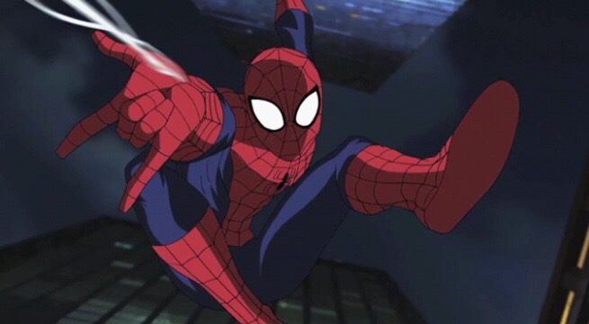Spider-Man, created by Stan Lee and Steve Ditko, is one of Marvel's most iconic characters. Peter Parker, a teenager from Queens, gains spider-like abilities after being bitten by a radioactive spider. With super strength, agility, and the ability to cling to walls, Spider-Man battles a rogues' gallery of villains while dealing with personal struggles. His mantra, "With great power comes great responsibility," underscores his commitment to using his abilities for the greater good, despite the hardships he faces. Spider-Man's relatability and resilience have made him a beloved figure worldwide.
2.Deadpool
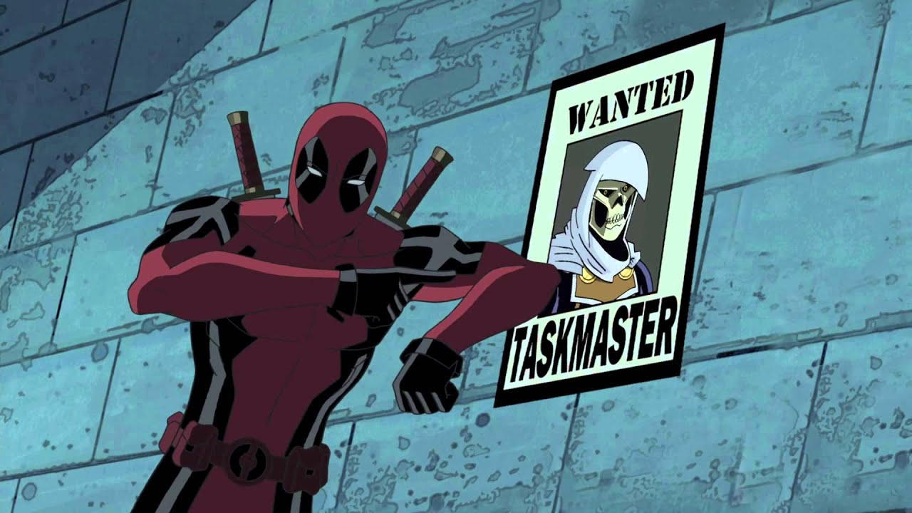Deadpool, also known as Wade Wilson, is a unique and unconventional superhero. Created by Rob Liefeld and Fabian Nicieza, Deadpool is known for his humor, irreverence, and breaking the fourth wall. His healing factor, similar to Wolverine's, makes him nearly immortal, and his expertise in combat and weaponry makes him a formidable opponent. Despite his violent and chaotic nature, Deadpool's sense of humor and complex personality have made him a fan favorite, especially through Ryan Reynolds' portrayal in the films.
3.Iron-Man
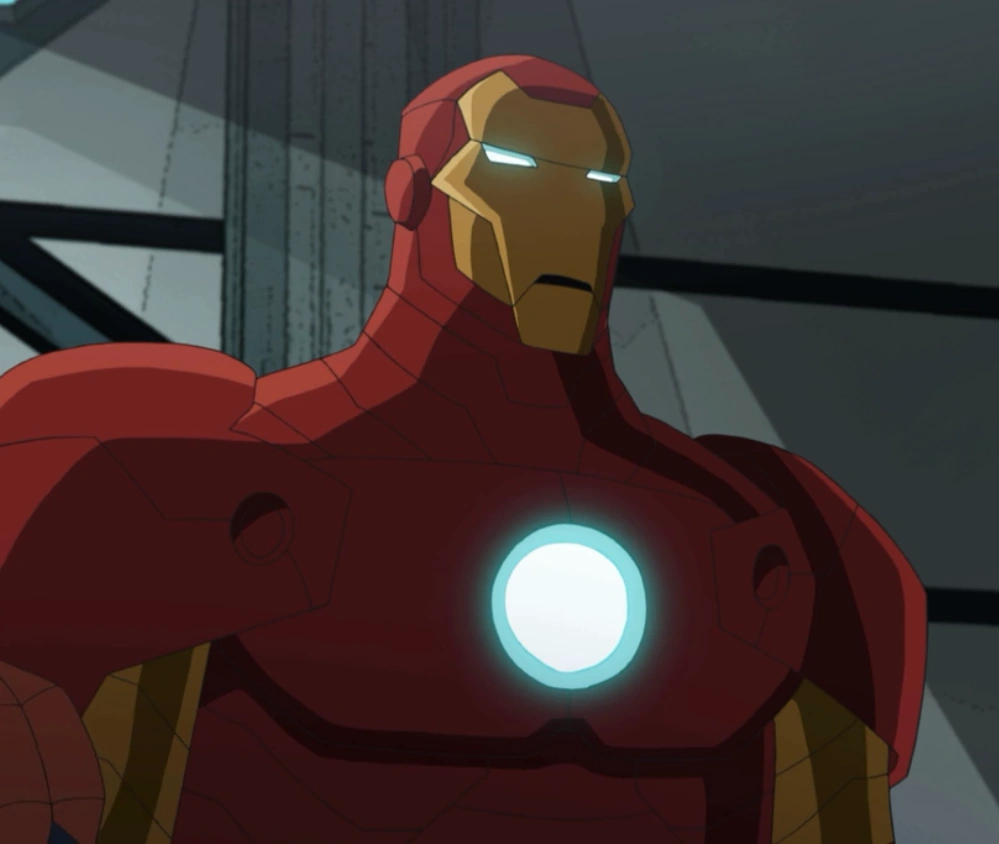Iron Man, or Tony Stark, is a billionaire genius who dons a suit of powered armor to fight evil. Created by Stan Lee, Larry Lieber, Don Heck, and Jack Kirby, Iron Man is a founding member of the Avengers and one of Marvel's most significant characters. Stark's journey from a self-centered industrialist to a selfless hero is marked by his battles with both external enemies and personal demons. His intelligence, ingenuity, and charisma, coupled with Robert Downey Jr.'s portrayal in the Marvel Cinematic Universe (MCU), have cemented Iron Man's status as a cultural icon.
4.Hulk
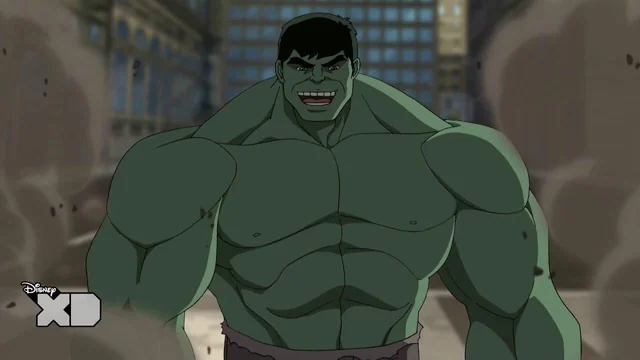The Hulk, created by Stan Lee and Jack Kirby, is the alter ego of Dr. Bruce Banner, a brilliant scientist who transforms into a massive green-skinned being of immense strength when enraged. The character embodies the struggle between man and monster, with Banner's intellect often clashing with the Hulk's primal rage. The Hulk's destructive power is matched by his tragic circumstances, making him one of Marvel's most complex and compelling characters. Over the years, Hulk has been both a hero and an anti-hero, wrestling with his identity and the fear he instills in others.
5.Ironfist
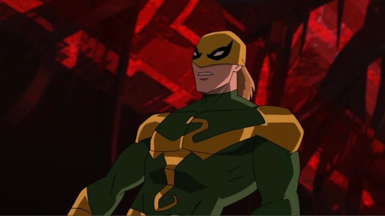Iron Fist, or Danny Rand, is a martial artist with the ability to summon and focus his chi into a superhuman force, giving him the "Iron Fist." Created by Roy Thomas and Gil Kane, Iron Fist draws heavily from martial arts mythology and the mystical city of K'un-Lun, where he was trained. As a hero, Iron Fist combines his incredible fighting skills with his mystical abilities to protect others and uphold justice. His character explores themes of spirituality, identity, and the intersection of Eastern and Western cultures.
6.Ghost-Rider
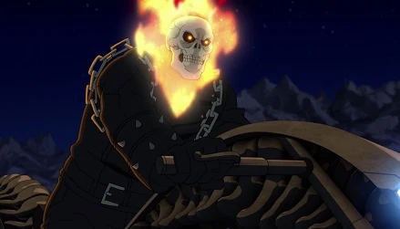Ghost Rider, known as the Spirit of Vengeance, is a supernatural anti-hero with a flaming skull and a motorcycle to match. There have been several Ghost Riders in Marvel's history, but the most famous is Johnny Blaze, a stunt motorcyclist who makes a deal with the devil to save a loved one, only to be cursed with the power of the Ghost Rider. Created by Roy Thomas, Gary Friedrich, and Mike Ploog, Ghost Rider's story is steeped in themes of redemption, punishment, and the struggle between good and evil. The character's dark, gothic aesthetic and tragic backstory have made him a cult favorite.
7.Wolverine
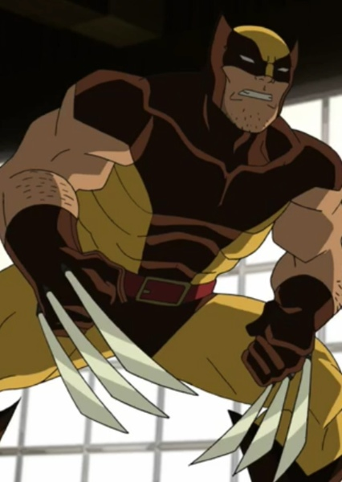Wolverine, or Logan, is one of the most popular X-Men characters. Created by Roy Thomas, Len Wein, and John Romita Sr., Wolverine is a mutant with enhanced senses, animal-like instincts, a regenerative healing factor, and retractable claws made of adamantium. His rough exterior, coupled with a deep sense of loyalty and a haunted past, makes Wolverine a compelling and relatable character. His struggles with his feral nature, his search for identity, and his efforts to protect those he cares about have made him a cornerstone of the X-Men and Marvel universe.
8.Captain-America
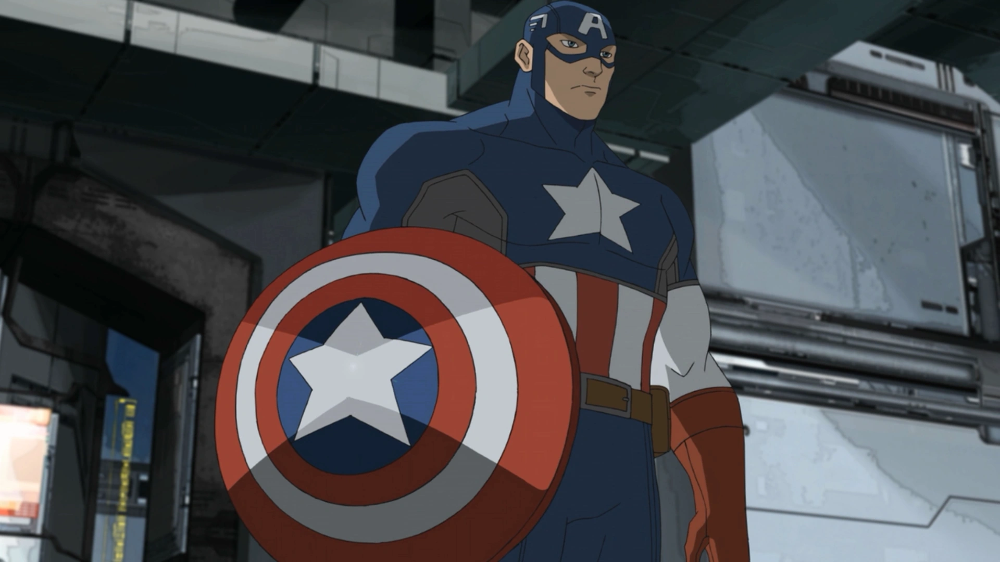Captain America, or Steve Rogers, is the embodiment of patriotism and the American spirit. Created by Joe Simon and Jack Kirby during World War II, Captain America was a frail young man who volunteered for a super-soldier serum experiment, transforming him into a peak human specimen. With his indestructible shield and unwavering moral compass, Captain America fights for justice and freedom. His character has evolved over the decades, addressing complex issues like identity, loyalty, and the cost of leadership. Chris Evans' portrayal in the MCU has further solidified his status as a symbol of hope and resilience.
9.Black-Panther
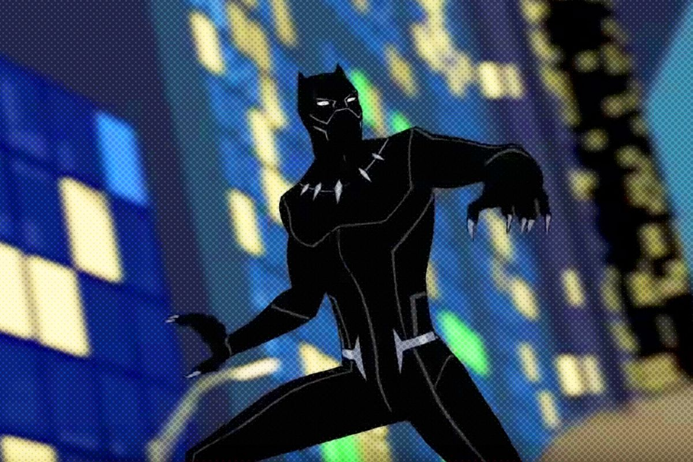Black Panther, or T'Challa, is the king of Wakanda, a technologically advanced African nation. Created by Stan Lee and Jack Kirby, Black Panther was the first black superhero in mainstream American comics. He possesses enhanced abilities due to the Heart-Shaped Herb and is a master tactician and skilled fighter. Black Panther's stories often explore themes of leadership, heritage, and the conflict between tradition and modernity. His character gained immense popularity through Chadwick Boseman's portrayal in the MCU, where he became a symbol of pride and representation for African and African-American communities.
10.Thor
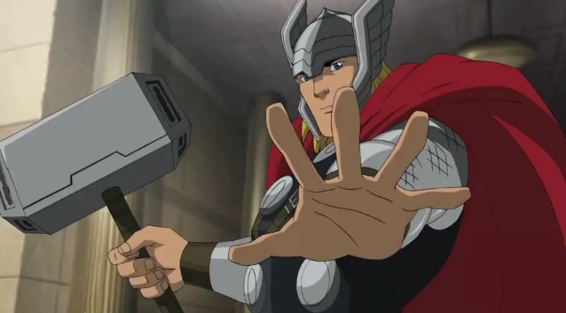Thor, the God of Thunder, is a character from Norse mythology adapted by Marvel Comics, created by Stan Lee, Larry Lieber, and Jack Kirby. Thor wields the magical hammer Mjolnir, which grants him control over thunder and lightning, and the power to fly. As the son of Odin and prince of Asgard, Thor balances his duties as a god with his responsibilities to Earth. His character arc involves themes of worthiness, humility, and the struggle to reconcile his divine heritage with his love for humanity. Thor's blend of mythological grandeur and superhero action has made him a central figure in Marvel's pantheon.
About Author
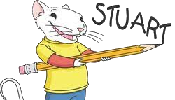Hello, I’m Stuart Little! I recently wrote a blog about my top 10 favorite Marvel characters, and I’m excited to share it with you. I’ve always been fascinated by the Marvel universe and its diverse range of heroes. From the web-slinging Spider-Man to the genius inventor Iron Man, each character brings something unique to the table. In my blog, I explore what makes these heroes so special to me, highlighting their strengths, personalities, and the epic stories they’ve been a part of. Whether it’s the unstoppable Hulk or the noble Captain America, these characters have left a lasting impression on me, and I’m sure they will on you too.